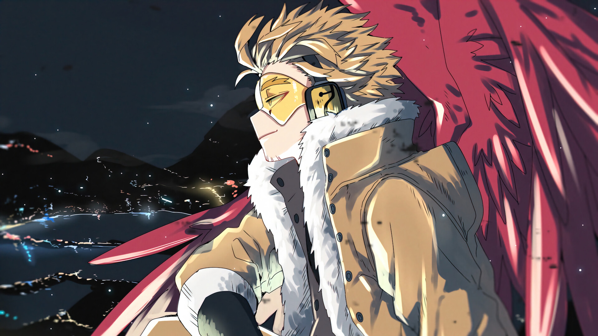
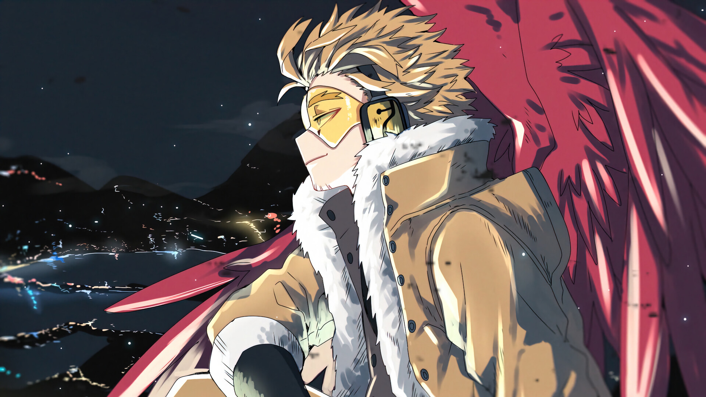

Izuku Midoriya - Deku
Izuku Midoriya, nascido sem individualidade em um mundo de superpoderes, sonha em ser um herói como All Might. Sua determinação e otimismo o levam a herdar o "One For All", embarcando em uma jornada para se tornar um grande herói, sempre priorizando salvar os outros. Com dedicação, coragem e inteligência, ele se transforma de um garoto tímido em um herói promissor.
Katsuki Bakugou - Kacchan
Katsuki Bakugou: Estudante talentoso da U.A. High School com temperamento explosivo e personalidade agressiva. Inicialmente valentão de Izuku, possui forte desejo de ser o número um. Apesar da rudeza, demonstra genuíno senso heroico, inteligência e habilidades de combate excepcionais, sempre buscando se aperfeiçoar.
Shoto Todoroki - Shoto
Filho do herói número um, Endeavor, Shoto Todoroki possui a individualidade "Half-Cold Half-Hot", gerando gelo do lado direito e fogo do esquerdo. Inicialmente reservado devido ao seu passado familiar conturbado, ele é calmo e disciplinado. Com o tempo, torna-se mais aberto e demonstra grande lealdade aos amigos.
Eijiro Kirishima - Red Riot
Com sua individualidade de endurecimento, Eijiro Kirishima é um personagem boisteroso, extrovertido e dedicado aos seus amigos. Ele valoriza muito a "masculinidade" e vive de acordo com um código estrito de honra e coragem. Leal e honesto, Kirishima está sempre disposto a ajudar seus amigos, mesmo que isso signifique quebrar regras. Sua natureza bondosa e amigável o impulsiona a se esforçar para ser um herói melhor, e ele é conhecido por sua determinação e espírito de sacrifício.
Toshinori Yagi - All Might
Toshinori Yagi (All Might): Ex-herói número um e "Símbolo da Paz" que inspirou o mundo com seu sorriso. Nascido sem individualidade, herdou o "One For All" e tornou-se lendário. Mesmo após perder a maior parte de seu poder, podendo usá-lo apenas por curtos períodos, continua como mentor inspirador na U.A. High School, personificando auto-sacrifício, esperança e o poder de inspirar os outros.
Enji Todoroki - Endeavor
Herói obcecado e abusivo no início, buscando superar All Might a qualquer custo. Forçado a ser o número 1, inicia uma difícil jornada de redenção pelos seus erros. Luta contra a pressão, o passado e tenta se tornar um herói e pai melhor. Personagem complexo e humano, cuja busca por redenção o torna fascinante para acompanhar.
Keigo Takami - Hawks
Hawks, um herói jovial e despreocupado com a individualidade "Fierce Wings". Possui grandes asas vermelhas controladas telecineticamente, sendo extremamente veloz e astuto. Apesar da aparência relaxada, é um mestre do engano e altamente proficiente em missões perigosas. Valoriza a liberdade e a aprovação popular, por vezes subestimando sua própria importância.